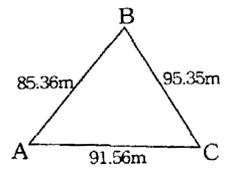
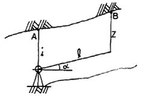
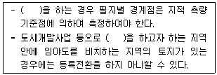

지적산업기사 (2009-07-26 기출문제)
1과목: 지적측량
1. 지적도근점성과표에 기록·관리하는 사항에 해당하지 않는 것은?
- 번호 및 위치의 약도
- 시준점의 명칭과 방위각
- 표지의 재질
- 소재지와 측량연월일
(정답률: 알수없음)

2. 지적삼각보조측량에서 2개의 삼각형으로부터 산출한 종선교차가 0.40m, 횡선교차가 0.30m 일 때 연결오차는?
- 0.30m
- 0.40m
- 0.50m
- 0.60m
(정답률: 알수없음)
3. 전파기측량방법에 의하여 다각망도선법으로 지적삼각보조측량을 하는 때에 1도선의 점의 수는 기지점과 교점을 포함하여 최대 얼마 이하로 하여야 하는가?
- 5
- 6
- 8
- 10
(정답률: 50%)
4. 경위의측량방법에 의한 지적도근점의 연직각을 관측하는 경우에 올려본 각과 내려본 각을 관측하여 그 교차가 최대 얼마 이내인 때에 그 평균치를 연직각으로 하는가?
- 30초
- 60초
- 90초
- 120초
(정답률: 59%)
5. 측판측량방법에 의한 세부측량을 교회법으로 하여 측량한 결과 시오삼각형이 생긴 경우 내접원의 지름이 얼마 이하인 때에는 그 중심을 점의 위치로 하는가?
- 1mm
- 2mm
- 3mm
- 4mm
(정답률: 40%)
6. 측판측량방법에 의해 측정한 경사거리가 30m이고, 엘리데이드의 경사분획이 +15이었다면 수평거리는 얼마인가?(오류 신고가 접수된 문제입니다. 반드시 정답과 해설을 확인하시기 바랍니다.)
- 26.7m
- 29.7m
- 30.6m
- 31.6m
(정답률: 0%)
7. 지적도근점의 망 구성형태가 아닌 것은?
- 결합도선
- 폐합도선
- 다각망도선
- 개방도선
(정답률: 80%)
8. 축척이 1/1,200 인 지역에서 면적이 700m2인 토지를 분할하는 경우 분할 후의 각 필지의 면적의 합계와 분할 전 면적과의 오차의 허용범위는?
- 15 m2이내
- 21 m2이내
- 25 m2이내
- 30 m2이내
(정답률: 17%)
9. 경위의측량방법에 의한 세부측량을 하는 경우에 측량결과도를 작성하는 축척 기준에 대한 설명이 옳지 않은 것은?
- 해당 토지의 지적도와 동일한 축척으로 작성한다.
- 도시개발사업 시행지역(농지의 구획정리지역은 제외한다.)
- 축척변경시행지역은 500분의 1로 작성한다.
- 농지구획정리시행지역은 500분의1로 작성한다.
(정답률: 43%)
10. 측판측량방법에 의하여 거리를 측정하는 경우, 도곽선이 줄어든 경우에 실측거리의 보정방법이 옳은 것은?
- 실측거리에 보정량을 더한다.
- 실측거리에 보정량을 뺀다.
- 실측거리에 보정량을 곱한다.
- 실측거리에 보정량을 나눈다.
(정답률: 57%)
11. 교회법에 의한 지적삼각보조점의 수평각 관측방법은?
- 2대회의 방향관측법
- 3대회의 방향관측법
- 3배각 관측법
- 방위각에 의한 관측법
(정답률: 37%)
12. 삼각형의 세 변의 길이가 아래와 같을 때, ⦟BAC의 값은?

- 95˚ 50ʹ 41ʺ
- 86˚ 50ʹ 41ʺ
- 65˚ 06ʹ 48ʺ
- 22˚ 40ʹ 21ʺ
(정답률: 55%)
13. 다음 중 지적측량의 방법이 아닌 것은?
- 사진측량방법
- 광파기측량방법
- 위성측량방법
- 수준측량방법
(정답률: 79%)
14. 다음 중 일람동의 등재사항이 아닌 것은?
- 도면의 제명 및 축척
- 도관선과 그 수치
- 지번 및 결번
- 주요 지형ㆍ지물의 표시
(정답률: 알수없음)
15. 경계점좌표등록부에 등록하는 지역의 토지의 면적은 얼마의 단위로 결정하여야 하는가?
- 1m2
- 0.1m2
- 0.01m2
- 0.001m2
(정답률: 59%)
16. 측판측량방법에 의한 세부측량을 교회법으로 하는 경우 방향각의 교각 범위 기준은?
- 60도 이상 90도 이하
- 60도 이상 120도 이하
- 30도 이상 120도 이하
- 30도 이상 150도 이하
(정답률: 50%)
17. 측판측량방법에 의한 세부측량을 도선법으로 하는 경우의 기준 및 방법 등에 대한 설명이 옳은 것은? (단, N은 변의 수)
- 기초점만으로 상호 연결하여야 한다.
- 도선의 측선장은 도상길이 15cm이하로 한다. 단, 광파조준의를 사용하는 때에는 10cm이하로 할 수 있다.
- 도선의 변은 20개 이하로 한다.
- 도선의 폐색오차가 도상길이 √n/5mm이하인 때에 그 오차는 각 점에 배분하여 점의 위치로 한다.
(정답률: 73%)
18. 지적도에 직경 3mm의 원을 제도하고 그 원 안에 십자선(+)을 표시하는 지적측량기준점은?
- 17cm이하
- 20cm이하
- 24cm이하
- 30cm이하
(정답률: 알수없음)
19. 지적도근측량에서 (가)도선의 수평거리의 합이 1688.54m일 때 연결오차의 허용범위는? (단, (가)도선은 1등도선이며 축척은 500분의 1임.)
- 17cm이하
- 20cm이하
- 24cm이하
- 30cm이하
(정답률: 알수없음)
20. 경계점좌표등록부를 비치하는 지역 안에 있는 각 필지의 경계점을 측정하는 방법에 해당하지 않는 것은?
- 도선법
- 방사법
- 교회법
- 방향관측법
(정답률: 알수없음)
2과목: 응용측량
21. 수준측량에서 전시(F.S.)의 정의로 옳은 것은?
- 측량 진행방향에 대한 표척의 읽음
- 수준점에 세운 표척의 읽음
- 지반고를 알고 있는 기지점에 세운 표척의 읽음
- 지반고를 알기 위한 미지점에 세운 표척의 읽음
(정답률: 63%)
22. 직접수준측량을 통해 중간점의 고저차에 대한 결과 없이 A점으로부터 2km 떨어진 B점의 표고차만을 구하려고 할 때 가장 적합한 야장 기입 방법은?
- 종횡 단식 야장
- 승강식 야장
- 고차식 야장
- 기고식 야장
(정답률: 38%)
23. 지상 1km2의 면적을 지도상에서 16cm2로 표시되는 축척으로 옳은 것은?
- 1/20000
- 1/25000
- 1/50000
- 1/100000
(정답률: 알수없음)
24. 다음 중 노선공사의 시공측량에 포함되지 않는 것은?
- 용지 측량
- 중요한 점의 인조점 측량
- 시공 기준틀 설치 측량
- 준공검사 측량
(정답률: 47%)
25. 교각 I=60˚, 곡선 반지름 R=100m, 노선시작점에서 I.P점까지의 추가거리가 250.60m일 때 시단현의 길이는? (단, 중심점 간격은 20m)
- 17.735m
- 12.865m
- 7.135m
- 2.265m
(정답률: 50%)
26. 그림과 같은 사갱에서 측정결과를 다음과 같이 얻었다. AB의 고저차는 얼마인가? (단, I = 0.50m, z = 1.30m, ℓ = 22.70m, α = 30˚)

- 20.46m
- 18.85m
- 12.15m
- 10.55m
(정답률: 알수없음)
27. 상호표정이 끝났을 때 사진 모델과 실제 지형모델과는 어떤 관계인가?
- 상사
- 대칭
- 합동
- 일치
(정답률: 80%)
28. 항공사진 판독의 요소와 거리가 먼 것은?
- 음영(shadow)과 색조(tone)
- 질감(texture)과 모양(pattern)
- 크기(size)와 형상(shape)
- 축척(scale)과 초점거리(focal distance)
(정답률: 알수없음)
29. 촬영고도 2000m에서 촬영기선장 560m촬영한 축척 1 : 3000인 항공사진에서 어느 건물의 시차를 측정한 결과 건물옥상이 12.4mm, 지면부분이 14.3mm이었다. 지면으로부터의 건물 높이는 약 얼마인가?
- 7m
- 10m
- 16m
- 20m
(정답률: 17%)
30. 축척1:5000의 항공사진을 촬영고도 1000m에서 촬영하였다면 사진의 초점거리는?
- 200mm
- 210mm
- 250mm
- 500mm
(정답률: 37%)
31. 곡선설치법 중 1/4법이라고도 하며, 이미 설치된 중심 말뚝 사잉에 다시 세밀하게 설치하는 데 편리하며, 시가지에서의 곡선 설치나 보도 설치 및 기설 곡선의 검사 또는 수정에 주로 사용되는 방법은?
- 중앙종거법
- 접선편거법
- 접선지거법
- 편각현장법
(정답률: 60%)
32. 측점 1에서 측점5 까지 직접 고저 횡단 측량을 실시하여 측점1의 후시가 0.571m이고 측점 5의 전시가 1.542m이었으며 후시의 총합이 2.274m이고 전시의 총합이 6.246m이었다면 측점5 의 표고는 측점 1에 비하여 어떤 위치에 있는가?
- 0.971m 높다.
- 0.971m 낮다.
- 3.972m 높다.
- 3.972m 낮다.
(정답률: 30%)
33. 축척 1 : 50000 지형도에서 810m와 910m 사이에 표시되는 주곡선 수는?
- 10개
- 9개
- 5개
- 2개
(정답률: 50%)
34. 단곡선을 설치할 때 곡선 반지름 R=100m, 교각 I=80˚ 일때 곡선길이(C.L)는?
- 69.87m
- 83.91m
- 93.63m
- 139.63m
(정답률: 알수없음)
35. 위성과 지상관측점 사이의 거리를 측정할 수 있는 원리로 옳은 것은?
- 세차 운동
- 음향관측법
- 카메론 효과
- 도플러 효과
(정답률: 37%)
36. 원격탐측(Remote Sensing) 위성과 거리가 먼 것은?
- VLBI
- LADSAT
- SPOT
- COSMOS
(정답률: 30%)
37. 다음 터널측량에 관한 설명 중 옳지 않은 것은?
- 터널측량은 갱외측량, 갱내측량, 갱내외 연결측량으로 구분 할 수 있다.
- 갱내측량에서는 기계의 십자선 및 표척 등에 조명이 필요하다.
- 터널의 길이방향은 삼각 또는 트래버스측량으로 한다.
- 터널 굴착이 끝난 구간에는 기준점을 주로 바닥에 설치한다.
(정답률: 74%)
38. 정확한 위치에 기준국을 두고 GPS위성 신호를 받아 기준국 주위에서 움직이는 사용자에게 위성신호를 넘겨주어 정확한 위치를 계산하는 방법은?
- DOP
- DGPS
- SPS
- S/A
(정답률: 알수없음)
39. 우리나라 1 : 5000 기본도에 사용하는 지형(높이)의 표시방법은?
- 음영법
- 영선법
- 단채법
- 등고선법
(정답률: 알수없음)
40. 종중복도 60%로 항공사진을 촬영하여 밀착사진을 인화했을 때 주점과 주점간의 거리가 9.2cm 이면 이 항공사진의 크기는 얼마인가?
- 23cm×23cm
- 18.4cm×18.4cm
- 18cm×18cm
- 15.3cm×15.3cm
(정답률: 알수없음)
3과목: 토지정보체계론
41. 지적전산자료의 이용에 관한 사항 중 옳지 않은 것은?
- 시ㆍ군ㆍ구 단위의 지적전산자료를 이용하고자 하는 자는 소관청의 승인을 얻어야 한다.
- 시ㆍ도 단위의 지적전산자료를 이용하고자 하는 자는 시ㆍ도지사의 승인을 얻어야 한다.
- 전국 단위의 지적전산자료를 이용하고자 하는 자는 국토해양부장관의 승인을 얻어야 한다.
- 국가 또는 지방자치단체가 지적전산자료를 이용하고자 하는 경우에도 사용료를 납부하여야 한다.
(정답률: 알수없음)
42. 도시정보체계(UIS:Urban Information System)를 구축할 경우의 기대효과와 거리가 먼 내용은?
- 도시 행정을 총괄적으로 관리할 수 있다.
- 각종 도시계획을 효율적이고 과학적으로 수립 가능하다.
- 효율적인 도시관리 및 행정서비스 향상의 정보 기반 구축으로 시설물을 입체적으로 관리할 수 있다.
- 지하시설물에 대한 정보는 별도의 시스템을 구축하여 다차원적인 데이터의 구축을 유도하기가 용이하다.
(정답률: 54%)
43. 한국토지정보시스템(KLIS)에 대한 설명이 옳은 것은? (단, 중앙행정부서의 명칭은 해당 시스템의 개방 당시 명칭을 기준으로 한다.)
- 건설교통부의 토지관리정보시스템과 행정자치부의 필지 중심 토지정보시스템을 통합한 시스템이다.
- 건설교통부의 토지관리정보시스템과 행정자치부의 시군구 지적행정시스템을 통합한 시스템이다.
- 행정자치부의 시군구 지적행정시스템과 필지중심 토지정보시스템을 통합한 시스템이다.
- 건설교통부의 토지관리정보시스템과 개별공시지가관리시스템을 통합한 시스템이다.
(정답률: 75%)
44. 지적정보센터에서 관리하는 토지관련자료가 아닌 것은?
- 주민등록전산자료
- 시설물등록전산자료
- 공시지가 전산자료
- 지적위성기준점관측자료
(정답률: 50%)
45. 지적사무에 사용하는 프로그램ㆍ자료ㆍ코드 및 단말기의 화면을 등록ㆍ관리하는 자는?
- 방송통신위원회 위원장
- 국토해양부장관
- 교육과학기술부장관
- 행정안전부장관
(정답률: 알수없음)
46. 자료를 효율적으로 공유하고 관리하기 위해 자료의 소개, 품질, 구성, 형상 및 속성정보, 공간참조 등과 같은 정보를 제공해주는 데이터를 무엇이라 하는가?
- 위치데이터
- 표본데이터
- 관계데이터
- 메타데이터
(정답률: 알수없음)
47. 다음 중 캐드(CAD) 자료의 호환을 위해 개발된 DXF 포맷에 관한 설명으로 잘못된 것은?
- 위상구조를 지원하여 활용도가 높다.
- 도형자료 관리에는 효율적이지만 속성정보를 포함하지 못하는 한계가 있다.
- 다양한 종류의 도형, 선의 두께와 형태, 색상, 폰트 등을 지원한다.
- 1라인 당 하나의 필드로 구성되어서 그만큼 파일크기가 커지는 단점이 있다.
(정답률: 알수없음)
48. 연속적인 면의 단위를 나타내는 2차원 표현요소로, 래스터데이터를 구성하는 가장 작은 단위는?
- 점
- 선
- 원점
- 격자
(정답률: 75%)
49. 다음 중 도형정보에 해당하지 않은 것은?
- 지적도
- 임야도
- 지형도
- 토지대장
(정답률: 73%)
50. 부정확한 디지타이징 때문에 발생되는 위상 오차로 한쪽 끝이 다른 연결점이나 결절점(NODE)에 완전히 연결되지 않은 상태의 연결선을 무엇이라 하는가?
- DANGLE
- SLIVER
- EDGE
- TOPOLOGY
(정답률: 46%)
51. 격자구조를 백터구조로 변환 시 격자영상에 생긴 잡음(NOISE)을 제거하고 외곽선을 연속적으로 이어주는 영상처리 과정을 무엇이라고 하는가?
- FILTERING
- NOISING
- CONVERSIONING
- THINNING
(정답률: 67%)
52. 토지정보 전산화의 목적에 해당하지 않은 것은?
- 체계적이고 과학적인 토지 관령 정책 자료와 지적행정을 실현할 수 있다.
- 지적서고의 확장을 방지할 수 있다.
- 지적정보의 정확성을 높이고 업무의 신속성을 확보할 수 있다
- 지적공부를 소유자와 실시간으로 공유할 수 있다.
(정답률: 알수없음)
53. 토지정보체계의 구성요소에 해당하지 않은 것은?
- 기준점
- 데이터베이스
- 소프트웨어
- 조직과 인력
(정답률: 75%)
54. 다음 중 벡터데이터 구조의 장점에 대한 설명이 옳지 않은 것은?
- 복잡한 현실세계에 대한 세밀한 묘사를 할 수 있다.
- 확대나 축소를 하여도 선이 매끄럽다.
- 래스터데이터보다 중첩분석을 하는 것이 편리하다.
- 위상정보가 제공되므로 다양한 공간분석이 가능하다.
(정답률: 84%)
55. SQL(STRUCTURED QUERY LANGUAGE)에 대한 설명으로 옳지 않은 것은?
- 영어와 같은 일반 언어와 구조가 유사하여 배우고 이해하기가 용이한 편이다.
- 자료 조회시 다중의 뷰(view)를 제공한다.
- 광범위하게 사용되는 과정 질의어(procedural query language)의 대표적인 예다.
- 능률적인 지적관리체제로의 개선을 위함이다.
(정답률: 30%)
56. 복원중
- 복원중
- 복원중
- 복원중
- 복원중
(정답률: 알수없음)
57. 연속도면의 제작편집에 있어 도곽선 불일치의 원인에 해당하지 않은 것은?
- 통일된 원점의 사용
- 도면축척의 다양성
- 지적도면의 관리 부실
- 지적도면 재작성의 부정확
(정답률: 92%)
58. 토지정보체계의 구축 필요성에 해당하지 않은 것은?
- 토지정보의 공개를 위함이다.
- 공공기관 간의 토지정보공유를 위함이다.
- 지적공부의 노후화를 극복하기 위함이다.
- 토지관련 과세자료로 활용하기 위함이다.
(정답률: 알수없음)
59. 다음 중 필지식별자로서 가장 적합한 것은?
- 지목
- 필지의 고유번호
- 토지소유자의 성명
- 토지의 소재지
(정답률: 82%)
60. 제1차 국가지리정보체계(NGIS) 구축 사업의 내용 중 6개 주제도 전산화사업의 대상에 해당하지 않는 것은?
- 개별공시지가도
- 행정구역도
- 토지이용현황도
- 국토이용계획도
(정답률: 45%)
4과목: 지적학
61. 동일한 경계가 축척이 다른 두 도면에 각각 등록된 경우 경계 경정에서 적용되는 원칙은?
- 일필일목의 원칙
- 축척종대의 원칙
- 경계불가의 원칙
- 주지목추종의 원칙
(정답률: 59%)
62. 토지를 지적공부에 등록함으로써 발생하는 효력이 아닌 것은?
- 구속력
- 확정력
- 공신력
- 강제력
(정답률: 알수없음)
63. 다음 중 일발적인 지번 부여 방식이 아닌 것은?
- 사행식
- 교호식
- 선별식
- 단지식
(정답률: 75%)
64. 물권의 배타성을 인식하게 하기 위하여 누구나 토지의 등록사항을 인식하고 활용할 수 있도록 공개하는 등기의 원칙은?
- 공시의 원칙
- 공신의 원칙
- 공증의 원칙
- 신의의 원칙
(정답률: 79%)
65. 1910년대 토지조사사업 당시 토지 소유권제도를 확립한 사정기관은?
- 임시토지조사국장
- 고등토지조사위원회
- 도지사
- 토지심사위원회
(정답률: 75%)
66. 다음 중 사출도(四出道)라는 토지구획방법을 시행한 고대 국가는?
- 부여
- 고조선
- 옥저
- 동예
(정답률: 82%)
67. 다음 중 조선시대의 토지대장인 양안에 대한 설명으로 옳지 않은 것은?
- 전적이라고도 하였다.
- 양안의 명칭은 시대, 사용처, 보관기간에 따라 달랐다.
- 양안은 호조, 본도, 본읍에서 보관하게 되어 있었다.
- 경국대전에 토지매매 후 100일 이내에 작성한다고 규정되어 있다.
(정답률: 알수없음)
68. 1916년부터 1924년까지 실시한 임야조사사업에서 사정한 임야의 구획선은?
- 경계선(境界線)
- 강계선(疆界線)
- 지역선(地域線)
- 지계선(地界線)
(정답률: 45%)
69. 백문매매(白文賣買)에 대한 설명이 옳은 것은?
- 백문매매란 입안을 받지 않은 매매계약서로, 임진왜란 이후 더욱더 성행하였다.
- 백문매매로 인하여 소유자를 보호할 수 있게 되었다.
- 백문매매로 인하여 소유권에 대한 확정적 효력을 부여 받게 되었다.
- 백문매매란 토지거래에서 매도자, 매수자, 해당관서 등이 각각 서명함으로서 이루어지는 거래를 말한다.
(정답률: 알수없음)
70. 조선시대에 정약용이 주장한 양전개정론의 내용에 해당하지 않는 것은?
- 방량법과 어린도법
- 정전제
- 경무법
- 망척제
(정답률: 알수없음)
71. 다음 중 양입지에 대한 설명으로 옳지 않은 것은?
- 주된 용도의 토지에 접속되거나 주된 용도의 토지로 둘러싸인 다른 용도로 사용되고 있는 토지는 양입지로 할 수 있다.
- 주된 용도의 토지의 편의를 위하여 설치된 대ㆍ도로ㆍ구거 등의 부지는 양입지로 할 수 있다.
- 종된 용도의 토지면적이 주된 용도의 토지면적의 10%를 초과하는 경우에는 양입지로 할 수 없다.
- 주된 용도의 토지에 편입되어 1필지로 획정되는 종된 토지를 양입지라고 한다.
(정답률: 54%)
72. 신라시대에 토지측량을 위한 구장산술 방전장에서 설정하고 있는 토지 형태에 해당하지 않는 것은?
- 호전(弧田)
- 구고전(句股田)
- 구전(球田)
- 규전(圭田)
(정답률: 알수없음)
73. 다음 중 토렌스시스템의 기본원리에 해당되지 않는 것은?
- 거울이론
- 배상이론
- 보험이론
- 커튼이론
(정답률: 85%)
74. 토지조사사업 당시의 지목에 해당하지 않는 것은?
- 임야
- 지소
- 염전
- 잡종지
(정답률: 54%)
75. 다음의 지적공부 중 대장에 해당하지 않는 것은?
- 경계점좌표등록부
- 공유지연명부
- 대지권등록부
- 토지대장
(정답률: 42%)
76. 양전의 순서에 따라 1필지마다 천자문의 자번호(子番號)를 부여하였던 제도는?
- 수등이척제
- 일자오결제
- 지번지역제
- 동적이척제
(정답률: 82%)
77. 지목의 부호를 표기할 때 차문자를 사용하는 지목에 해당하는 것은?
- 임야
- 공원
- 주유소용지
- 공장용지
(정답률: 50%)
78. 조세징수를 제도화하고 공평성을 도모하기 위해 시작된 지적조사로, 근대 지적의 효시로 평가되는 것은?
- 둠스데이지적
- 밀라노지적
- 니더작센지적
- 나폴레옹지적
(정답률: 82%)
79. 다음 중 토지조사사업 당시 작성한 지형도의 종류에 속하지 않는 것은?
- 축적 1/5,000
- 축적 1/10,000
- 축적 1/25,00
- 축적 1/50,000
(정답률: 40%)
80. 토지조사사업 당시 필지를 구분함에 있어 일필지의 강계(疆界)를 설정할 때, 별필로 하였던 경우가 아닌 것은?
- 특히 면적이 협소한 것
- 지반의 고저가 심하게 차이 있는 것
- 심히 형상이 구부러지거나 협장한 것
- 도로, 하천, 구거, 제방, 성곽 등에 의하여 자연으로 구획을 이룬 것
(정답률: 알수없음)
5과목: 지적관계
81. 다음 중 지번에 결번이 생기는 사유가 아닌 것은?
- 행정구역의 변경
- 축척변경
- 토지분할
- 지번변경
(정답률: 50%)
82. 다음 중 지적공부의 복구자료가 될 수 없는 것은?
- 지적편집도
- 측량결과도
- 토지이동정리결의서
- 복제된 지적공부
(정답률: 80%)
83. 전산정보처리조직에 의한 사용자권한등록화일에 등록하는 사항이 아닌 것은?
- 사용자 이름
- 사용자 번호
- 사용자 비민번호
- 사용자 직책
(정답률: 50%)
84. 도면에 등록하는 사항의 제도 방법에 대한 설명이 이 옳지 않은 것은?
- 도곽의 구획은 지적법에서 정한 좌표의 원점을 기준으로 하여 정한다.
- 도면에 등록하는 경계는 0.1mm 폭으로 한다.
- 동ㆍ리의 행정구역선은 0.4mm 폭으로 한다.
- 지번은 명조체로 하며, 전산정보처리조직이나 레터링으로 작성하는 경우에는 고딕체로 할 수 있다.
(정답률: 39%)
85. 신규등록신청에 관한 설명으로 옳지 않은 것은?
- 소유권을 증명할 수 있는 서류의 사본을 첨부하여 신청 하여야 한다.
- 토지소유자는 신규등록할 토지가 있는 때에는 그 날부터 60일 이내에 소관청에 신청해야 한다.
- 임야대장 및 임야도에 등록된 토지를 토지대장 및 지적도에 옮겨 등록할 토지가 발생하였을 때 신규등록 신청한다.
- 지적공부에 새로이 등록할 토지가 발생하였을 때 신규등록 신청한다.
(정답률: 70%)
86. 다음 중 시ㆍ군ㆍ구의 청사 밖으로 지적공부를 반출할 수 없는 경우는?
- 천재의 재난을 피하기 위하여 필요한 경우
- 지변의 재난을 피하기 위하여 필요한 경우
- 시ㆍ도지사의 승인을 얻은 경우
- 소관청의 승인을 얻은 경우
(정답률: 67%)
87. 중앙지적위원회 심의ㆍ의결사항이 아닌 것은?
- 지적측량적부심사의 재심사
- 지적기술자의 양성방안
- 축척변경에 따른 청산금 산출에 관한 상항
- 지적측량기술의 연구ㆍ개발
(정답률: 알수없음)
88. 다음 중 시ㆍ도지사 또는 소관청에게 측량성과에 대한 검사를 받지 아니하는 지적측량은?
- 신규등록측량
- 토지분할측량
- 경계복원측량
- 등록전환측량
(정답률: 50%)
89. 공익사업을 위한 토지 등의 취득 및 보상에 관한 법률에 의해 토지를 수용할 수 있는 경우는?
- 지적측량사가 측량을 위하여 타인의 토지에 출입하고자 하는 경우
- 지적측량사가 측량을 위하여 장애물을 제거하고자 하는 경우
- 축척변경시 청산금을 산출하는 경우
- 지적측량기준점표지를 설치하기 위하여 필요한 경우
(정답률: 75%)
90. 토지의 이동으로 인한 면적의 결정 방법이 옳지 않은 것은?
- 분할을 하는 때에는 새로이 측량하여 각 필지의 면적을 정한다.
- 등록전환을 하는 때에는 임야대장상의 면적을 그대로 옮겨 등록한다.
- 토지합병을 하는 때에는 합병전의 각 필지를 합산하여 그 필지의 면적으로 한다.
- 신규등록을 하는 때에는 새로이 측량하여 각 필지의 면적을 정한다.
(정답률: 알수없음)
91. 소관청이 축척변경을 하고자 하는 때에 축척변경사유를 기재한 승인신청서를 제출하여야 하는 곳은?
- 시ㆍ도지사
- 지방지적위원회
- 중앙지적위원회
- 행정안전부장관
(정답률: 알수없음)
92. 경계점좌표등록부의 등록사항이 아닌 것은?
- 토지의 소재
- 지번
- 지목
- 부호 및 부호도
(정답률: 37%)
93. 지적기술자의 직무범위에 대한 설명이 옳지 않은 것은?
- 지적기술사 : 지적측량기술의 개발에 관한 기획 및 연구
- 지적기사 : 지적측량의 종합적 계획수립
- 지적산업기사 : 지적측량
- 지적기능사 : 지적측량 또는 도면의 정리와 등사
(정답률: 42%)
94. 지번 “275-3” 을 저적범의 규정에 맞게 읽은 것은?
- 275번지 3호
- 275에 3번지
- 275의 3
- 275 다시 3
(정답률: 80%)
95. 소관청이 지번을 변경하고자 하는 때에 지번변경사유를 기재한 승인신청서에 첨부하여 제출하여야 하는 서류에 해당하는 것은?
- 지번별 조서
- 지적도 사본
- 임야도 사본
- 색인표
(정답률: 60%)
96. 토지소유자가 합병하여야 할 토지가 있는 때에 그 날부터 60일 이내에 소관청에 신청하여야 하는 대상 토지의 지목에 해당하지 않는 것은?
- 도로
- 공장용지
- 학교용지
- 잡종지
(정답률: 50%)
97. 다음의 ( ) 안에 공통으로 들어갈 내용으로 옳은 것은?

- 등록전환측량
- 지적확정측량
- 신규등록측량
- 축척변경측량
(정답률: 50%)
98. 지적도에 등록하는 지목의 표기(부호)가 옳지 않은 것은?
- 잡종지 – 잡
- 공장용지 - 장
- 주유소용지 – 유
- 수도용지 - 수
(정답률: 77%)
99. 지적위원회에 관한 설명이 옳지 않은 것은?
- 지적위원회는 중앙지적위원회와 지방지적위원회가 있다.
- 지적측량에 대한 적부심사청구사항은 지방지적위원회의 심의 ㆍ 의결 사항이다.
- 중앙지적위원회의 위원장 및 부위원장을 포함한 위원의 임기는 2년으로 한다.
- 중앙지적위원회의 위원장은 국토해양부 지적업무담당국장이다.
(정답률: 58%)
100. 지적측량수행자의 성실의무에 해당하지 않는 것은?
- 정당한 사유없이 지적측량의뢰를 거부하여서는 안된다.
- 직계 존 ㆍ 비속의 소유토지에 대하여는 지적측량을 하여서는 안된다.
- 정당한 사유없이 그 업무상 알게 된 비밀을 누설하여서는 아니된다.
- 고의로 지적측량을 부실하게 하여 제3자에게 발생한 손해를 배상하기 위한 보험가입은 하여서는 아니된다.
(정답률: 77%)